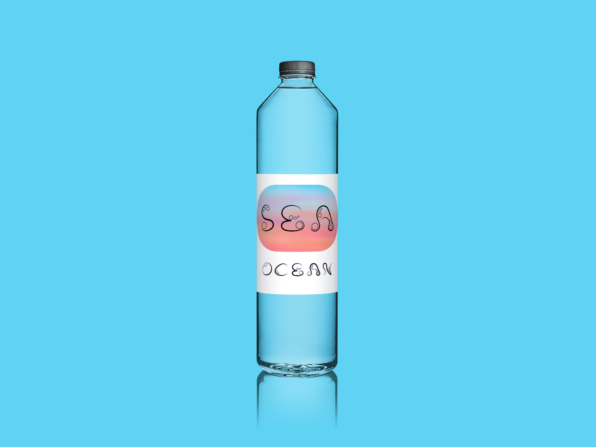
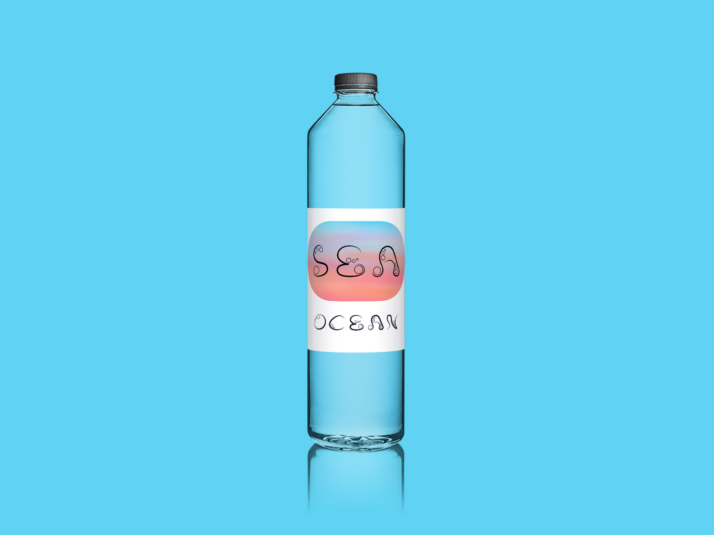

Velkommen til display fonten


Min inspirationskilde til fonten har været havet og elemnter derfra.
De rolige bølger til stregerne, søpindspind og perler til de runde
former, samt luftbobler der kan sive op fra havets bund op mod
overfladen.
Fontens koncept er altså roligt hav og livet under overfladen.


SEA er en display font, som giver et legende, men enkelt og fint udtryk. Den kan fx bruges i forbindelse med vand, men kunne også være oplagt til content med smykker.

 
